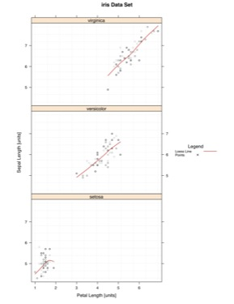

Example - Points and Loess
|  |
### Using a toy data set due to example data sets not having more than one Y variable
#pdf(file="F:/Website/yyplot/lattice/latticeyy-points-loess-large.pdf", width = 8.5, height = 11)
### Import Data
data <- iris
split.column <- "Species"
data.to.plot <- list()
data.to.plot$x <- data[,"Petal.Length"] #x
data.to.plot$y <- data[,"Sepal.Length"] #y
data.to.plot$criteria <- data[,split.column] #split.column
x.min.lim <- min(data.to.plot[["x"]])
x.max.lim <- max(data.to.plot[["x"]])
y.min.lim <- min(data.to.plot[["y"]])
y.max.lim <- max(data.to.plot[["y"]])
range.largest <- max(c(y.max.lim-y.min.lim),c(x.max.lim-x.min.lim))
data.to.plot$x.lim <- c(x.min.lim,x.max.lim)
data.to.plot$y.lim <- c(y.min.lim,y.max.lim)
bw <- FALSE
library(lattice)
### End Import
### Panel Function
function.of.panel <- function(
x,
y,
data.to.plot.in.panel = data.to.plot,
black.and.white.in.panel = bw,
subscripts
){
cat("\n\n\nPacket", packet.number(),"\n")
#### Grid
plot.grid(
x.divisions = 10,
y.divisions = 10,
grid.color = "grey95",
x.limits = data.to.plot.in.panel[["x.lim"]],
y.limits = data.to.plot.in.panel[["y.lim"]]
)
### Loess Line
plot.loess(
points.x = x,
points.y = y,
line.thickness = 1.4,
line.style = "solid",
line.color = "red",
line.span = 5/6
)
### Plot Points
plot.points(
points.x = x,
points.y = y,
points.symbol = "o",
points.size = 1,
points.color = color.gen("black","grey75",3)
)
}
### End Panel
### Make Y~Y Plot
lat.yy <- xyplot(
y ~ x | as.factor(criteria),
# remove '| as.factor(criteria)' if do not want to split the data
data = data.to.plot,
type = NULL,
# Taken Care of in Panel
# aspect=1,
# X length is the same as the Y length. It produces a square box.
aspect="iso",
# X units have the same length as Y units, does not mean aspect = 1.
# Most likely will produce a rectangular shape
layout = c(1,3,1),
# Forces the layout to have 1 column, 3 rows, 1 page
xlab = "Petal Length [units]",
ylab = "Sepal Length [units]",
xlim = c(x.min.lim - 0.03*(range.largest),x.max.lim + 0.03*(range.largest)),
ylim = c(y.min.lim - 0.03*(range.largest), y.max.lim + 0.03*(range.largest)),
main = "iris Data Set",
panel = function.of.panel,
key = list(
title = "Legend",
text = list(
c("Loess Line","Points"),
col="black"
),
points = list(
col = c("red","black"),
pch = c(NA,4),
cex = c(1)*0.75
),
lines = list(
col = c("red","black"),
lwd = c(1.4,1),
lty = c("solid","blank")
),
type = "l",
space = "right",
cex.title = 1,
cex = 0.75
)
)
### Change Color of Trellis Device and Plot Data
trellis.device(color = !bw,new = FALSE,retain = FALSE)
### Plot Data
print(lat.yy)
#dev.off()
{kind=link}